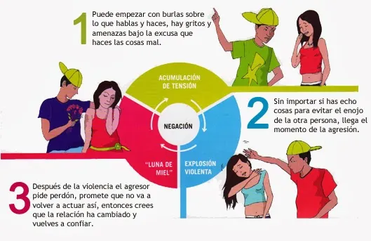

La violencia de género es una realidad que afecta la vida, la tranquilidad y la dignidad de muchas personas. Se presenta cuando alguien recibe un trato injusto, es humillado, amenazado o lastimado por razones relacionadas con su género. No siempre se manifiesta mediante golpes o agresiones físicas; también puede aparecer a través de palabras que hieren, actitudes de desprecio, manipulaciones, amenazas o comportamientos que buscan controlar la vida de otra persona.
Muchas veces, este tipo de violencia comienza con situaciones que parecen pequeñas, como los celos excesivos, las prohibiciones, las burlas o la idea de que una persona tiene más autoridad que otra simplemente por ser hombre o mujer. Con el tiempo, estas conductas pueden convertirse en problemas más graves y afectar profundamente la autoestima, la libertad y la seguridad de quienes las sufren.
Aunque puede afectar a diferentes personas, las mujeres y las niñas se encuentran especialmente expuestas a esta problemática debido a las desigualdades y los estereotipos que todavía existen en la sociedad.
En pocas palabras, la violencia de género ocurre cuando se deja de respetar a una persona como ser humano y se pretende imponer poder sobre ella por su género. Combatirla no consiste únicamente en evitar las agresiones, sino también en aprender a escuchar, respetar las diferencias y comprender que nadie tiene derecho a controlar, humillar o hacer sentir inferior a otra persona. Al final, todos merecemos vivir sin miedo, expresar lo que sentimos y tomar nuestras propias decisiones. Porque el respeto no debería depender de si somos hombres o mujeres, sino del simple hecho de que todos somos personas y tenemos el mismo valor y dignidad.
Tipos de violencia
Duración: 2 min 20 s
La violencia de género puede presentarse de diferentes maneras y no siempre es fácil reconocerla. Algunas formas dejan heridas visibles, mientras que otras afectan los sentimientos, la confianza y la tranquilidad de una persona. Entre los principales tipos de violencia encontramos:
Violencia física:
Ocurre cuando una persona utiliza la fuerza para lastimar a otra, mediante golpes, empujones, patadas o cualquier agresión que cause daño a su cuerpo. Es una de las formas más visibles de violencia.
Violencia psicológica:
Se presenta cuando alguien busca hacer sentir inferior, insegura o incapaz a otra persona. Puede manifestarse mediante amenazas, humillaciones, manipulaciones, insultos o comentarios que destruyen poco a poco su autoestima.
Violencia verbal:
Consiste en utilizar palabras para herir, ofender o menospreciar a alguien. Incluye gritos, burlas, insultos y expresiones que hacen sentir mal a la persona. Muchas veces se normaliza como una simple discusión, aunque puede causar un daño emocional profundo.
Violencia sexual:
Ocurre cuando una persona es obligada, presionada o manipulada para participar en actos sexuales sin su consentimiento. Nadie tiene derecho a decidir sobre el cuerpo de otra persona.
Violencia económica:
Se produce cuando alguien controla el dinero o los recursos económicos de otra persona para limitar su independencia. Por ejemplo, impedirle trabajar, quitarle sus ingresos o negarle el acceso al dinero necesario para sus necesidades.
Violencia patrimonial:
Consiste en quitar, esconder, destruir o controlar las pertenencias, documentos o bienes de una persona. Su finalidad puede ser perjudicarla o hacer que dependa de alguien más.
Violencia digital:
Se manifiesta mediante el uso de redes sociales, celulares o plataformas digitales para acosar, amenazar, humillar o controlar a alguien. Algunos ejemplos son revisar conversaciones sin permiso, difundir fotografías íntimas sin consentimiento o enviar mensajes intimidantes.
Violencia simbólica:
Aparece a través de mensajes, imágenes, costumbres o ideas que refuerzan la desigualdad entre hombres y mujeres. Por ejemplo, afirmar que ciertas actividades solo pueden realizarlas los hombres o que las mujeres deben obedecer siempre.
Ciclo de la violencia
El ciclo de la violencia es un proceso que explica cómo las situaciones de maltrato pueden repetirse dentro de una relación. Muchas veces, la violencia no aparece de manera repentina, sino que comienza con pequeños conflictos, actitudes de control o faltas de respeto que van aumentando con el tiempo. Lo más preocupante es que, después de una agresión, pueden existir momentos de tranquilidad que hacen creer a la persona afectada que todo cambiará.
Este ciclo suele dividirse en tres fases principales:
Fase de acumulación de tensión
En esta etapa comienzan a aparecer discusiones frecuentes, celos, reclamos, insultos o comportamientos que generan incomodidad y miedo. La persona que sufre violencia intenta evitar los conflictos, cuidando lo que dice o hace para no provocar una reacción negativa. Poco a poco, la relación se convierte en un ambiente de preocupación e inseguridad.
Fase de explosión o agresión
Es el momento en el que la tensión acumulada se transforma en una agresión. Puede manifestarse mediante golpes, amenazas, gritos, humillaciones o cualquier otra forma de violencia. Durante esta fase, la persona afectada puede sentir miedo, tristeza, desesperación e incluso culpa, aunque es importante comprender que la responsabilidad de la agresión siempre pertenece a quien la comete.
Fase de arrepentimiento o reconciliación
Después de la agresión, quien ejerció la violencia puede mostrar arrepentimiento, pedir perdón, hacer promesas de cambio o demostrar cariño para recuperar la confianza de la otra persona. Esto puede generar esperanza de que la situación mejorará. Sin embargo, si no existe un cambio real y sostenido, las conductas violentas pueden volver a repetirse.

Mitos y realidades
En nuestra sociedad todavía existen muchas creencias equivocadas sobre la violencia de género. Algunas se han transmitido de generación en generación y, aunque parezcan comentarios normales, pueden hacer que el maltrato se justifique o que las personas afectadas tengan miedo de pedir ayuda. Por eso, es importante aprender a diferenciar los mitos de la realidad.
1. Mito: "Si una persona cela demasiado es porque ama de verdad".
Realidad: Los celos excesivos no son una demostración de amor, sino que pueden convertirse en una forma de control. Amar significa confiar, respetar y permitir que cada persona tome sus propias decisiones.
2. Mito: "La violencia solo existe cuando hay golpes".
Realidad: No todas las heridas son visibles. Los insultos, amenazas, humillaciones y el control económico también son formas de violencia que afectan emocionalmente a las personas.
3. Mito: "Si no abandona la relación es porque quiere seguir ahí".
Realidad: Salir de una relación violenta no siempre es sencillo. El miedo, las amenazas, la dependencia económica o la esperanza de que la pareja cambie pueden dificultar esta decisión.
4. Mito: "La violencia de género solamente afecta a las mujeres".
Realidad: Cualquier persona puede sufrir violencia relacionada con su género. Sin embargo, las mujeres y niñas enfrentan especialmente esta problemática debido a las desigualdades sociales.
5. Mito: "Los problemas de pareja deben quedarse dentro de casa".
Realidad: La violencia no es un simple problema privado. Toda persona tiene derecho a buscar ayuda, recibir protección y vivir en un ambiente seguro.
6. Mito: "Si el agresor pide perdón, significa que ya cambió".
Realidad: Una disculpa no garantiza un cambio. Para superar las conductas violentas se necesita asumir responsabilidades y demostrar respeto mediante acciones constantes.
7. Mito: "La forma de vestir puede provocar una agresión".
Realidad: Ninguna forma de vestir, hablar o comportarse justifica la violencia. Cada persona es responsable de sus acciones y nadie merece ser agredido.
¿Cómo lo podemos prevenir?
Prevenir la violencia de género es una responsabilidad que comienza con nuestras propias acciones y con la manera en que tratamos a los demás. No se trata solamente de evitar los golpes o las agresiones, sino también de aprender a respetar, escuchar y comprender que todas las personas merecen vivir con libertad y sin miedo. Para lograrlo, es importante construir relaciones saludables y dejar atrás aquellas ideas que justifican el maltrato.
Fomentar respeto y la igualdad de género
Desde pequeños debemos aprender que todas las personas tienen los mismos derechos y merecen las mismas oportunidades, sin importar su género. Nadie debe sentirse superior ni tener poder sobre la vida de otra persona.
Educar sobre la violencia de género
Hablar sobre este problema en las escuelas, hogares y comunidades ayuda a reconocer las señales de maltrato. La educación permite cambiar pensamientos equivocados y evitar que ciertas conductas violentas se consideren normales.
Promover una buena comunicación
Aprender a expresar nuestros sentimientos sin recurrir a insultos, amenazas o gritos es fundamental. Los desacuerdos pueden resolverse mediante el diálogo, la paciencia y el respeto mutuo.
Reconocer las primeras señales de violencia
Los celos excesivos, el control de las amistades, las humillaciones y las prohibiciones no deben confundirse con muestras de amor. Identificar estas actitudes a tiempo permite buscar apoyo antes de que la situación empeore.
No guardar silencio ante el maltrato
Cuando conocemos a alguien que está sufriendo violencia, es importante escucharlo sin juzgarlo, creer en su experiencia y ofrecerle apoyo. Buscar ayuda de familiares de confianza, profesionales o instituciones de protección puede marcar una gran diferencia.
Utilizar las redes sociales con responsabilidad
Debemos evitar compartir contenido que humille, discrimine o promueva la violencia. También es importante respetar la privacidad de los demás y denunciar situaciones de acoso o amenazas digitales.
Construir relaciones saludables
Una relación sana debe estar basada en la confianza, el cariño, la libertad y el respeto. Amar a alguien no significa controlar sus decisiones, revisar su celular o impedirle relacionarse con otras personas.
¿Dónde pedir ayuda?
Si vives violencia o conoces a alguien que la vive, no estás solo/a y no es tu culpa. Estas son las líneas y los lugares donde puedes pedir ayuda en Ecuador. Todos son gratuitos.